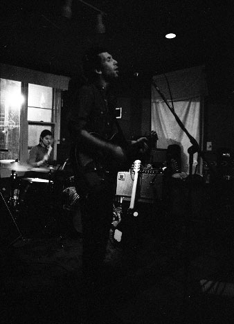
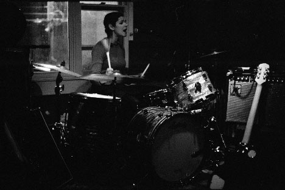
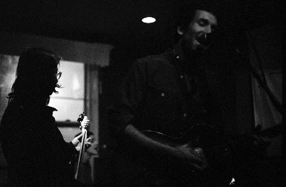
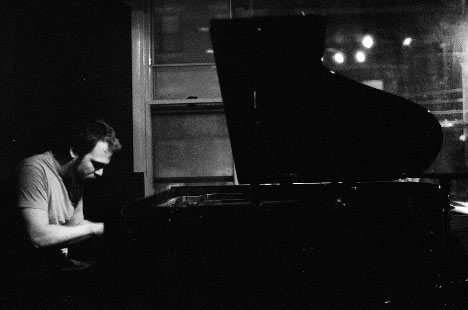
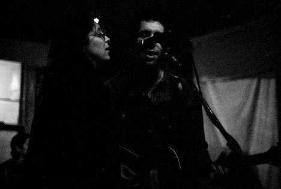
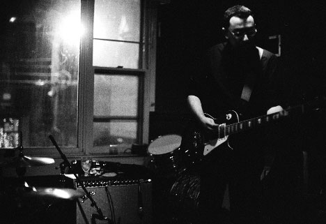
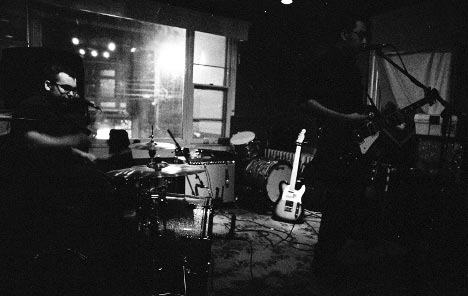
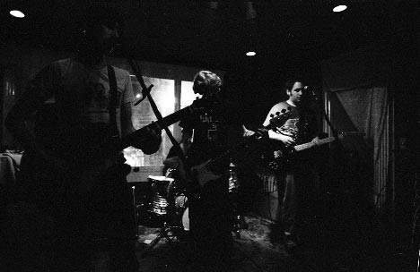
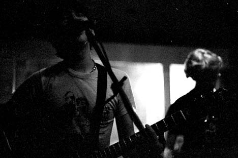

Big Orange Crayonmusical thingsThe Malarkies, Mishima USA, and John Brodeur and the Suggestions The Larkin, Albany February 23rd, 2002 No time to write a review today, sorry. This was a pretty good show, though... Pictures: I screwed up and underdeveloped the film this time, so that's why these look so terrible. Maybe I should wait for days when I'm not in a hurry to do my developing... The Malarkies    Huge surprise! Karla and Matt Schickele were there with the Malarkies! And I just played a Beekeeper song on my last radio show, too...   Mishima USA: I saw Mishima way back in the day at TT the Bears in Cambridge with Mel, and I was happy to be able to see them again.   John Brodeur and the Suggestions:   Camera stuff: Body: Nikon F3HP Lenses: 50mm f/1.4 and 24mm f/2.8 Nikkors (There's almost no light in there, so that's all I could use) Film: Fuji Neopan 1600 exposed at 3200, developed 17 minutes in Rodinal (1+100) at 18 degrees, but I must have done something wrong because they're way underdeveloped. You look at them and you can see the exposure's there, but it's incredibly faint. Oh well. Please don't use these elsewhere unless you are in one of the bands or are a nice person. |